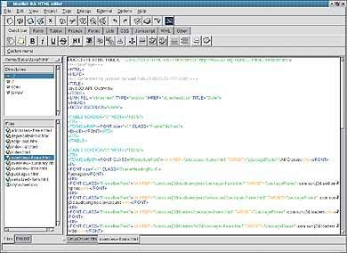
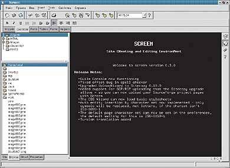
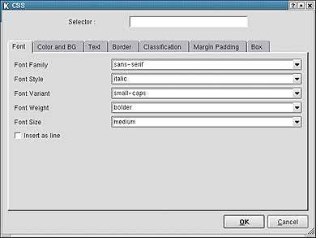
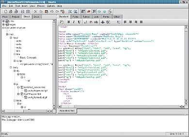
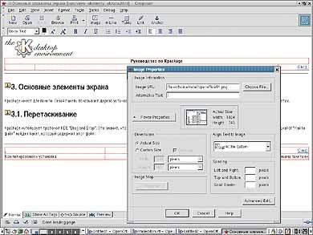
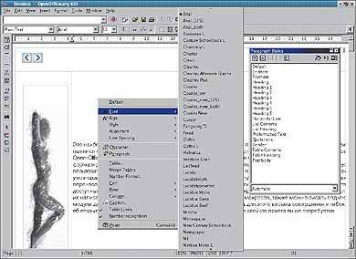
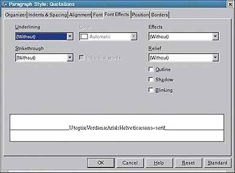
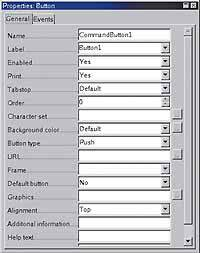

Бесплатный сыр на бесплатном блюдечке
Виталий Галактионов
04.12.2001
Publish,
#08/2001
Завоевав прочные позиции на рынке серверов, операционная система
Linux постепенно внедряется на рабочие места пользователей.
Насколько она применима в качестве платформы для Web-дизайна?
Попробуем разобраться в этом, рассмотрев Web-редакторы, работающие
под Linux и не расходящиеся с ее идеологией.
Итак, рeчь пойдет о тех редакторах, которые можно скачать из
Интернета бесплатно вместе с исходными кодами. Впрочем, скачивать не
обязательно, т. к. рассмотренные программы можно найти в составе
самых популярных ныне в России дистрибутивов Mandrake Spring2001 и
ASPLinux 7.1.
Само собой, некоммерческие проекты развиваются гораздо медленнее
коммерческих, хотя существует немало примеров, когда бесплатные
программы с открытым исходным кодом (Apache, Perl, Gimp, MySQL...)
вполне успешно конкурировали с оплаченными разработками. Но это
скорее исключение, чем правило, т. к. подобных проектов в сети море,
а признания добиваются лишь единицы.
Еще одной проблемой является локализация программ. Эта тема редко
волнует разработчиков, особенно когда дело касается русского языка.
Несмотря на высокие оценки российского интеллекта, реальные проекты
наших разработчиков для юниксовых операционных систем тонут во
множестве проектов, создаваемых в других странах. По этим двум
причинам круг рассматриваемых программ был ограничен теми, что уже
обладают необходимым набором возможностей и при этом корректно
работают с кириллицей. Исключение представляет лишь Open Office
(аналог Star Office), html-редактор которого почему-то работает
гораздо хуже других компонентов пакета, но, на мой взгляд, является
весьма перспективным с точки зрения скорости развития,
функциональности и универсальности. Кроме того, можно
воспользоваться версией html-редактора из более <древнего> аналога
Star Office 5.2, вполне корректно работающего с кириллицей и
обладающего практически такими же возможностями, но несколько
притормозившего в развитии.
Все виды Web-редакторов можно разделить на два типа. Одни
предлагают пользователю средства автоматизации управления кодом
Web-страницы - подсветка ключевых слов разными цветами, вставка
конструкций тегов в код для последующего заполнения и пр. В общем,
все то, что позволяет избежать повторного, рутинного набора тегов
вручную. Другие пошли более радикальным путем - предложили вовсе не
использовать ручное кодирование, а просто рисовать Web-странички,
размещая в них нужные элементы, как это привыкли делать пользователи
мощных текстовых редакторов типа Microsoft Word. Конечно же, почти
все такие программы не имеют сколько-нибудь серьезных редакторов
кода и высвечивают его только в виде <плоского> текста без
специализированных операций. Налицо два разных лагеря, которые,
похоже, вовсе не собираются ассимилироваться, потому что пакетов,
обладающих свойствами и тех, и других, мне найти не удалось.
Bluefish
Bluefish - простая, интуитивно понятная и функционально
насыщенная программа. Будет привычным инструментом для <беженцев> с
других платформ, привыкших работать непосредственно с исходным кодом
Web-страничек.

|
| Рабочая среда Bluefish
|
Этот редактор, как и два последующих, работает непосредственно с
исходным кодом страничек, основная суть операций - вставка тегов.
Как правило, для использования редакторов такого типа необходимо
четкое представление о структуре кода, что не всегда приемлемо для
начинающих разработчиков и тех, кого больше интересует дизайн, а не
стройность внутренней структуры и сопровождение. Но все же
представленные экземпляры обладают свойствами, значительно
отдаляющими их от неспециализированных текстовых редакторов типа
Notepad из операционной системы Windows, который рекомендуют
радикально настроенные Web-мастера.
Bluefish обладает вполне приличным набором вставляемых тегов, о
чем можно догадаться едва взглянув на его главное окно. Для их
привлечения необходимо установить курсор в нужное место кода
Web-странички, вызвать функцию вставки и заполнить поле данных, в
котором оказывается курсор. Функциональность такой работы
определяется количеством поддерживаемых редактором тегов, но мы
рассмотрим те случаи, в которых редакторы выходят за рамки обычного
применения.
Bluefish позволяет вести проекты, управляя входящими в него
файлами. Кроме того, с помощью панели, находящейся с левой стороны
рабочего поля программы, вы можете выбирать нужный каталог файловой
системы, двойным щелчком открывать файлы кода и вставлять
изображения. Вроде ничего особенного, но очень удобно.
Редактор обеспечивает одновременную работу с множеством открытых
документов и легкое переключение между ними посредством закладок.
При просмотре кода можно подсветить ключевые слова, что увеличивает
читабельность, правда, настройка не слишком наглядна. Не хватает
встроенного режима просмотра результата работы, но по кнопке
вызывается внешний браузер, выбрать и настроить который также можно
самому.
Еще редактор запускает внешние программы с настраиваемыми
параметрами и фильтры, основная задача которых - обработка данных,
поступающих на вход, и возвращение результата. Второе, пожалуй,
более полезно для запуска внешних процедур, к примеру на скриптовых
языках, а также для обработки исходного кода (верификации,
обновления и др.). Новичкам от этого пользы мало, но опытным
Web-дизайнерам ничего не стоит написать пару десятков строк на Perl
для создания фильтра.
Вставка тегов в Bluefish выполняется двумя способами. При
традиционном варианте в код вставляются открывающий и закрывающий
элементы тега, а курсор помещается в поле данных. Если же полей в
этом теге несколько, то сначала выводится диалоговое окно с запросом
ввода необходимых значений для полей тега, и только после этого тег
вставляется в код.
Все множество тегов рассматривать нет смысла, отметим лишь самые
нетрадиционные. Тег Quick Start позволяет автоматически создать
<скелет> структуры Web-странички. Пользователю нужно ввести только
ее заголовок (title) и выбрать тип документа, который будет
представлен в первой строке и предназначен для информирования
браузера о версии документа и его возможных тегах. Select colour
позволяет визуально определить необходимый цвет и вставить в
документ его код: угадать цвет, подбирая его шестнадцатеричное
представление, непросто. В панели тегов для построения таблиц есть
вполне интеллектуальные теги создания <скелета> таблицы, гибкой
настройки ее параметров, настройки отдельных строк таблицы, полей и
ее заголовка. В панели Frames есть весьма гибкий набор инструментов
для работы с фреймами документа, включая Frame Wizard, где можно
дать фрейму имя, назначить исходный файл, размеры, задать их
количество и тип, работать с таблицами стилей, создавать некоторые
виды <скелетов> для JavaScript и вставлять команды WML. И, пожалуй,
наиболее интересная функция - это проверка правописания,
реализованная через ispell, который неплохо <говорит> русским языком
и имеет русский словарь, а также помогает самостоятельно создать
панель инструментов (Сustom menu). С ней вы не только настроите
редактор под себя, но и расширите его инструментарий.
В общем, Bluefish оставляет очень приятное впечатление своей
простотой и достаточно широкими возможностями для данного типа
программ. Его освоение не отнимет много времени, а все операции
весьма прозрачны и интуитивно понятны.
Screem
Это весьма нетрадиционный редактор. Видимо, разработчики его в
большей степени ориентировались на создание целых сайтов, а не
отдельных страничек. Он гораздо тщательнее готовит проекты сайтов,
при этом создается специальный конфигурационный файл для настройки
каждого проекта, существуют отдельные мастера (wizards) для создания
проекта сайта и странички, имеется система работы с версиями сайтов
(СVS), что позволяет разрозненным группам работать над одним
проектом.

|
| Стартовое окно редактора Screem
|
Как и в Bluefish, на левой панели редактора есть пара
вспомогательных окон, но их предназначение несколько иное. Верхнее
служит для навигации по доступным элементам проекта с возможностью
их вставки в документ. Пункт с меткой html представляет собой
иерархическую схему, перемещаясь по ветвям которой, можно выбрать
тип необходимого элемента и сам элемент. В сущности, эта древовидная
структура представляет собой меню тегов, для вставки которых нужно
просто щелкнуть мышью. Нижняя панель имеет четыре закладки: Site,
Browse, Struct, Property. Первая предназначена для навигации по
файлам проекта. Вторая - для навигации по файловой системе и
открытия документов, не входящих в проект. А вот закладка Struct
предоставляет новые возможности навигации по внутренним элементам
Web-странички и содержит иерархическое дерево структуры документа.
Но самой интересной является закладка Property. Она активизируется,
когда пользователь выделяет в исходном коде какой-либо тег. Тогда
можно задать значения множеству параметров тега, включая обработку
событий: заполнив поле события, вы задаете имя обработчика события,
реализация которого выполняется другими средствами и в другом месте
кода.
Рабочее поле редактора также имеет несколько режимов работы:
редактирование, просмотр, справка и др. Кнопки переключения режимов
находятся справа. Кстати, просмотр результата возможен и с помощью
внешнего браузера (и не одного).
В программе содержится проверка правописания посредством ispell,
удобная справочная система с быстрой навигацией по ключевым словам,
предпечатный просмотр исходного кода (для более аккуратной
подготовки бумажной документации) и несколько весьма развитых
мастеров. Наиболее интересны: генератор таблиц - он значительно
гибче аналога из Bluefish и производит почти полную настройку
таблицы в одном диалоговом окне; генератор каскадируемых таблиц
стилей - обеспечивает очень тонкую настройку стилей; простенький
генератор галерей изображений - вставляет в часть страницы серию
изображений из указанного каталога и настраивает параметры
страницы.
Screem оставляет неоднозначное чувство. С одной стороны - весьма
интересные нововведения, которыми так и хочется воспользоваться, с
другой - несколько нетрадиционный подход и незавершенность
задуманного, что иногда приводит к сбоям.
Quanta Plus
Еще один интересный проект. Он, как и предыдущий, имеет более
развитые средства работы на уровне проектов сайтов и даже обладает
отладчиком PHP-скриптов, о чем можно догадаться, взглянув на нижнее
окно сообщений. Но как им воспользоваться, я разобраться не смог, в
документации этого также нет, хотя есть вполне приличное описание
JavaScript, PHP, HTML и каскадируемых таблиц стилей. Конечно, на
английском языке, но для большинства Web-дизайнеров это не
препятствие, к тому же справкой пользоваться очень удобно и всегда
можно уточнить синтаксис той или иной конструкции.
Желание разобраться с PHP-отладчиком подвигло меня обратиться к
конфигурационным файлам. И там обнаружились весьма интересные
данные. В конфигурационных файлах настраивается множество
параметров, даже такие, как меню. То есть складывается впечатление,
что основная часть кода этого редактора содержится в
конфигурационных файлах, которые каждый может настроить под себя с
помощью простейшего текстового редактора и в результате получить
программу, мало похожую на оригинал. Правда, стоит отметить, что для
Linux подобный подход к разработке не уникален.

|
| Настройка таблицы стилей
|
Из других особенностей отмечу возможность передвигаться по
древовидной иерархии структуры документа, файловой системе и
структуре проекта. Для этого есть свои панели в левом окне. Из
интерактивных генераторов наиболее развиты только генератор таблиц,
точнее, совокупность визуальных инструментов создания и настройки
таблиц и генератор каскадируемых таблиц стилей, значения для которых
выбираются из списка, что позволяет не заучивать синтаксис их
описания.
Редактор обладает собственным модулем просмотра, проверкой
правописания и гибкой системой настройки подсветки кода для
множества языков программирования. Интересной представляется функция
редактирования свойств тегов выбором пункта во всплывающем меню (при
нажатии правой кнопки мыши над нужным тегом). В этом случае
появляется диалоговое окно для основных параметров тега и назначения
обработчиков событий.

|
| Рабочая среда Quanta c отображением
иерархической структуры документа
|
Этот редактор показался мне более законченным, чем предыдущий, и,
к тому же, впечатляет архитектура программы, которая представляет
собой ядро и множество конфигурационных файлов, позволяющих
достаточно просто расширять функциональность программы.
Mozilla Composer
Теперь подошел черед рассмотреть парочку WIZIWIG-редакторов -
ведь не всех привлекает перспектива копаться непосредственно с кодом
Web-страничек, без возможности их <рисования>.
Mozilla Composer является наследником широко известного Netscape
Composer, но развивается почему-то гораздо лучше, вместе со своим
браузером. Собственно, поэтому я предпочел рассмотреть семейство
Mozilla.

|
| Рабочая среда Сomposer c панелью
настройки параметров тега Image
|
Этот редактор сохранил лучшие традиции предков и представляет
собой несложный, но надежный, простой и очень удобный редактор,
позволяющий быстро и эффективно решать основные задачи. Его смело
можно рекомендовать начинающим Web-мастерам. Этому способствует
интуитивно понятный и не перегруженный интерфейс, а также
возможность быстро просматривать результат <рисования> страницы и
изменения структуры кода.
Для вызова модуля редактирования из пакета Mozilla необходимо
воспользоваться клавиатурной комбинацией <Ctrl-4>, но если вы
чаще редактируете страницы, чем просматриваете их, то можно
настроить Mozilla так, чтобы Сomposer вызывался при загрузке
программы.
Меню этого редактора самое простое из всех рассматриваемых и
состоит из трех основных частей: панели редактирования (она есть
практически во всех программах); панели текстовых элементов, работая
с которой, вы будете заниматься только набором, редактированием
текста и его форматированием; специальной Web-панели, состоящей
всего из пяти инструментов (Image, H.Line, Table, Link, Anchor).
Как вы уже поняли, без Web-панели Composer - неплохой текстовый
редактор с необходимым минимумом для форматирования текста, основные
функции которого понятны из картинки. Кстати, он всегда может придти
на помощь как редактор текста: его услугами я пользовался, когда при
определенных условиях установки дистрибутива Linux ни один другой
текстовый редактор не мог работать с кириллицей.
Что касается Web-элементов, то, несмотря на их малое количество,
настройка каждого выполняется очень тщательно, при желании - для
каждого вида. Например, элемент Image в простейшем случае позволяет
выбрать только файл изображения и альтернативный текст, который
высвечивается в случае невозможности отобразить картинку. Если есть
желание более тщательно настроить изображение, то в диалоговом окне
настройки жмите на кнопку More Properties и устанавливайте размеры,
режимы обтекания текстом и поля между текстом и изображением.
Кстати, для вызова окна редактирования установленного изображения
есть меню, всплывающее при нажатии на элементе правой кнопки мыши.
Для более тщательной настройки изображения в окне редактирования
есть кнопка Advanced Edit. Это окошко одинаково для всех пяти
элементов и является чем-то вроде визуального редактора тегов. Здесь
можно выбрать любое свойство тега и явно присвоить ему некое
значение, назначить элементу обработчик какого-либо доступного
события, а событие выбирается из выпадающего меню.
Элемент H.Line определяет горизонтальную разделительную линию, ее
ширину, толщину и расположение. Ей также можно назначить обработчик
события из диалогового окна настройки свойств. Table позволяет
создавать простые двухмерные таблицы. Этот процесс очень прост: вам
нужно только указать количество столбцов, строк и ширину таблицы,
ширина же колонок и высота строк меняется автоматически при вводе
текста. Элементы Link и Anchor одного типа, т. к. первый
осуществляет переход по внешней ссылке (к другому файлу), а второй
по внутренней (к метке в том же файле), и настраиваются они
практически одинаково.
Еще отмечу, что редактор позволяет вставлять в страницу
специальные символы простым выбором из списка и сохранять страничку
в различные кодировки и в <плоский> текстовый файл.
Composer обладает всем необходимым для тех, кто создает
информационное наполнение сайтов и при этом не желает углубляться в
интерфейс специализированных программ или в язык HTML. Не надо
забывать, что Composer - всего лишь часть весьма интересного
интернет-пакета Mozilla.
Open office html-редактор
Это наиболее представительный редактор из такого же солидного
пакета. Одним из важнейших его преимуществ является органичное
вплетение в офисный пакет. Это позволяет пользователям, работающим в
Star Office или Open Office, легко переходить от редактирования
текста к созданию Web-страничек, т. к. средства форматирования
остаются такими же. Конечно, добавляется несколько новых вставляемых
элементов, если пользователь выберет HTML как тип нового документа.
Помимо того, вы можете воспользоваться всеми утилитами офисного
пакета: это средства навигации по документу, проверка правописания,
расстановка переносов, настройка режимов набора и редактирования
текста, гибкая настройка стилей и пр. Доступны также макросы,
написанные на Basic и JavaScript, - для их отладки есть специальный
редактор разработчика макросов. Можно писать подключаемые модули для
специализированных функций - комплект разработчика весьма совершенен
и гибок. А об открытом исходном коде я даже не упоминаю, поскольку
для расширения свойств пакета он не потребуется.

|
| Панель работы со стилями и всплывающее
меню настройки шрифтов |
Офисный пакет работает с электронными таблицами и базами данных,
а это означает не только легкий перенос данных из разных форматов в
HTML, но и, например, функции непосредственного взаимодействия с
базами данных.
В области форматирования текста отметим удобную панель настройки
стилей Paragraph Styles. С ее помощью выбираются текущие стили,
редактируются и создаются новые, в том числе на основе выделенного
текста. Для создания нового стиля (как абзаца, так и символа) можно
сначала настроить нужный заголовок, задать гарнитуру, кегль, цвет и
прочие параметры, а добившись нужного результата, простым щелчком
кнопки создать новый стиль. И, конечно же, богата сама настройка
стилей: разные виды выравнивания, повороты текста, эффекты и многое
другое, чему позавидуют даже весьма солидные текстовые
редакторы.

|
| Панель настройки стилей для абзаца
|
К вашим услугам удобный инструмент вставки нетрадиционных
символов. Для этого нужно выбрать меню Special Character и вызвать
панель с раскладкой символов для выбранного шрифта. Теперь укажите
нужный и, щелкая по клеточкам, вставьте символы в текст - очень
удобно при вставке сразу нескольких различных знаков.
Можно разбить страницу на несколько колонок, чтобы заверстать
текст по журнальному образцу, вставляя различную служебную
информацию на каждой странице (ее номер, автор, дата и пр.).
В общем, достаточно солидный арсенал - практически, текстовый
редактор пакета обладает многими свойствами настоящей программы
верстки.
Теперь вкратце рассмотрим Web-элементы, которые можно вставлять в
документ. Начнем снова с текста, но теперь уже анимированного. Да,
представьте себе: набираем строку текста и потом только задаем вид
ее анимации (разные виды движения текста и его мигание), которые тут
же заиграют без перехода в режим предварительного просмотра.

|
| Панель настройки свойств кнопки
|
Настройка таблиц чрезвычайно гибка и удобна. Так, для выбора
количества столбцов и строк достаточно их отрисовать одним
движением. То есть при нажатии на кнопку создания таблицы
высвечивается сетка с изменяемым размером, по которой пользователю
нужно провести курсором по диагонали, чтобы выделить нужное
количество столбцов и строк. После создания таблицы передвигаться по
ней очень комфортно, а размер корректируется динамически в
зависимости от введенных данных. Кроме того, ее настройка позволяет
создавать сложные комбинации форм и оформления, а ресурсов столько,
что рассмотреть в статье даже часть их не представляется возможным.
Еще добавлю, что такая таблица больше похожа на базу данных, т. к.
позволяет задавать типы используемых данных и формализовать их
представление. Поля цен, например, будут содержать знак доллара, и
каждые три разряда в них будут отделяться точками, а дата будет
также установлена по выбранному формату и т. д.
Приятная мелочь - наличие собственной галереи, элементы из
которой можно просто перетаскивать на рабочее поле, после чего
тщательно редактировать. Кстати, этот редактор позволяет
трансформировать вставляемые объекты путем перетаскивания
управляющих вершин рамки объекта.
Средства управления элементами также на высоте: к объектам можно
применять операции выравнивания не только в двух измерениях, но и по
глубине (по координате 2,5). А определение элемента как Anchor to
Page из меню Position and Size позволяет свободно размещать объекты
на странице, без привязки к последовательности расположения тегов в
коде, как это было в недалеком прошлом.
Редактор обладает возможностью группировки элементов на странице.
Для этого достаточно в документ вставить объект Frame, а затем
добавлять в него прочие объекты. Это очень удобно при разработке
цельных модулей информации вроде диалоговых окон, в которых
размещаются элементы с некоторыми общими свойствами.
Вообще, во время работы с этим редактором складывается
впечатление, что его возможности выходят за пределы представления о
процессе создания Web-страниц. Так, здесь вы можете создавать
автоматически выпадающие списки с информацией, привязанной к базе
данных. Впрочем, создать можно и таблицу, отображающую сведения из
доступной базы данных, да и диалоговое окно с доступом к файловой
системе для выбора файла. Я бы даже предположил, что этот редактор
больше похож на RAD-средство (Rapid Application Development) для
создания мощных интернет-приложений, т. к. он обладает прекрасными
визуальными средствами построения интерфейсов, связью с базами
данных посредством ODBC и JDBC-драйверов и солидной скриптовой
поддержкой. Кстати, сам пакет может не только открывать базы, но и
создавать их. К сожалению, последние возможности пока реализуются
только виртуально, т. к. подобные конструкции отображаются только во
внутреннем формате офисного пакета, а при сохранении HTML-документа
некоторые элементы вообще не отражаются. Вероятно, разработчики
хотели показать, каким потенциалом обладает Web-редактор.
Несмотря на это достоинств у редактора, впрочем, как и у всего
офисного пакета, слишком много, чтобы их можно было
игнорировать.
Вместо заключения
Этот краткий обзор редакторов всего лишь напоминание тем, кто не
знает или не подозревает о существовании очень неплохих
альтернативных решений на платформах, отличных от Windows, и от
идеологии, отличной от Microsoft. Ведь Linux уже долгие годы
развивается, впитав все самое лучшее из Unix-систем, а нажитый для
этой платформы программный капитал вовсе незачем выбрасывать за
борт.
Об авторе: Виталий Галактионов ([email protected]) -
независимый автор.
Идеология linux
Операционная система Linux фактически является общенародным
достоянием разработчиков и пользователей всего мира. Это значит, что
каждый может получить исходные коды этой операционной системы и
множества ее утилит, принять участие в разработке или
совершенствовании, уведомить разработчиков об ошибках в системе для
быстрейшего их исправления (ошибки нередко исправляются буквально за
день - вы никогда не дождетесь такого от Microsoft). Созданные
заплатки, как и сама система, свободно скачиваются из Интернета. К
тому же Linux - это не просто операционная система, а огромное
количество программ, набор которых и номера версий определяются
разработчиками дистрибутивов. И вы можете спокойно войти в их число.
Для этого нужно скачать несколько гигабайт программ, а затем
установить и настроить так, чтобы все функционировало как единый
организм.
По подобным правилам разрабатывается множество приложений для
Linux и не только. Конечно, реализовать серьезный продукт при такой
<анархии> непросто (особенно когда разработчики не получают прибыль
от продаж), поэтому существуют специальные правила и программы,
позволяющие контролировать процесс создания приложений. А что
касается дохода, то финансовые законы в Linux несколько иные: за
операционную систему платят не пользователи, а производители
оборудования и коммерческих программ. Для них является
принципиальным сам факт существования прекрасной платформы для их
приложений на множестве аппаратных платформ, а пользователю не надо
дополнительно платить за программное обеспечение, покупая
устройства, цена которых нередко оказывается ниже стоимости
операционной системы. Поэтому сегодняшние инвестиции в Linux крупных
производителей превышают миллионы долларов.
Такое положение Linux определяется событиями, уходящими на десять
лет в прошлое, когда Линус Торвальдс написал собственную
операционную систему и разослал ее код по Интернету для обсуждения и
критики. Потом у него появились сторонники, которые сами понемногу
подправляли код, потом эта ОС стала вполне пригодной для
использования, потом распространилась на весь мир, а потом?..
WWW.BLUEFISH.OPENOFFICE.NL
При выборе свободно распространяемой программы советую прежде
всего обратить внимание на качество и полноту данных о редакторе,
представленных на сайте, а также периодичность их обновления. Это
свидетельствует о серьезности планов разработчиков и о
перспективности развития пакета.
Разработчиком Bluefish является Оливер Сессинк (Olivier Sessink).
Его сайт прост, но вполне информативен. Имеется множество <зеркал>,
откуда можно скачать программу размером всего 1,5 Мбайт и
документацию по использованию.
WWW.SCREEM.ORG
Ведущим разработчиком приложения является Дэвид Найт (David
Knight). В Интернете оно представлено вполне приличным и
информативным сайтом. Размер программы около 7 Мбайт. Интересный
эксперимент, грозящий в будущем стать мощной программой ведения
сайтов. Посмотрим:
QUANTA.SOURCEFORGE.NET
Весьма развитая и устоявшаяся программа. К сожалению, сайт в
последнее время не работал, но несмотря на это проект развивается и
является очень неплохой платформой для разработчиков. Авторы:
Дмитрий Поплавский (Dmitry Poplavsky), Александр Яковлев (Alexander
Yakovlev) и Эрик Лаффун (Eric Laffoon). Размер пакета составляет
почти 10 Мбайт, но, увы, документации к самой программе нет.
WWW.MOZILLA.ORG
Это <общенародная> программа со множеством независимых
разработчиков занимает около 10 Мбайт в комплекте. Интенсивно
развивается, хорошо представлена в Интернете и является интуитивно
понятным, надежным инструментом без особых излишеств.
WWW.OPENOFFICE.ORG
Весь офисный пакет занимает около 20 Мбайт. Есть подробная и
всесторонняя документация, а в дистрибутиве ASP Linux 7.1 содержится
весьма солидное печатное руководство на русском языке. Разработкой
пакета занимается отделение компании Sun. Мощный и наиболее
динамично развивающийся пакет.